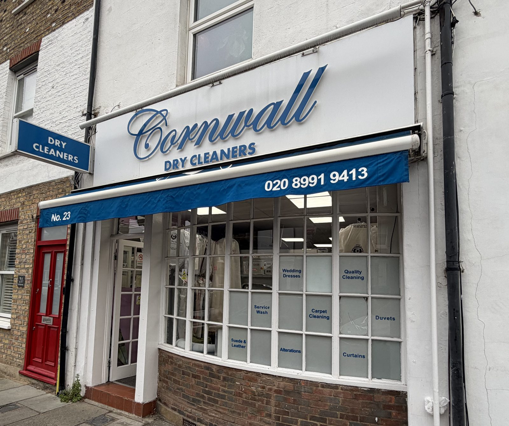

Option 1
Fascia White
Quiet white page. Shop photo beside the headline, fascia close-up in the story, then the same services and reviews.

Option 2 · proposed main
Blue Awning
Navy first screen like the canopy, with the 4.9 Google rating card on the right of the shop photo.
Option 3
Haven Lane
Useful first screen: photo, 4.9, hours, call and directions, then the shared site sections.
Option 4
Neighbours
The current layout, now in shop blue and white, with the Haven Lane photo in the hero.